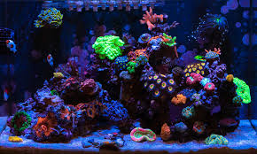

Overview

Image by World Wide Corals
In coral reefs there is three main types of coral. these three types of coral consist of...
These three main catagories of coral are what make up the reef tanks kept in people homes, and large aquarium facilities. Some people see coral as a plant, but coral is really a large colony of small organisms. Coral also isnt photosynthetic like some people think, it actually has a symbyotic relationship with a photosyntheic bacteria that gives it energy in exange for a place to live and protection.
| SPS | LPS | Soft Coral |
| Hard | Medium | Easiest |